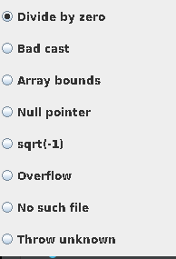
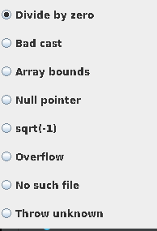

Lab 11: Exception Handling
Using IntelliJ you are going to do some error handling exploration.
- Open IntelliJ
- Create a new project
- Call it
Shapeslike the screen shot below. - Note you can use any JDK for this exercise, I am using JDK 11.0.13
- Call it
Step 1
Reproduce the following to set up the project

Now you can edit main() with the following code, then compile and run.
{
System.out.println(3/0);
}
You should see the following output in the Run terminal...

Modify the Main.java as shown below. The change is to catch an exception through try-catch block.
try{
System.out.println(3/0);
}
catch(Exception e){
System.out.printf("Caught runtime exception = %s\n", e);
}
If you run the program again you should get the following output:

Modify the Main.java as shown below. The change is to use more specific Exception class, ArithmeticException in this case.
try{
System.out.println(3/0);
}
catch(ArithmeticException e){
System.out.printf("Caught runtime exception = %s\n", e);
}
If you run the program again you should get the following output:

Let's try changing the Exception Class, to NumberFormatExpression.
try{
System.out.println(3/0);
}
catch(NumberFormatException e){
System.out.printf("Caught runtime exception = %s\n", e);
}
What happens when you run it?

Because the expected Exception Class is wrong.
For fun, do the following, what happens and why?
try{
System.out.println(3/0);
} catch(ArithmeticException e){
System.out.printf("Caught runtime exception = %s\n", e);
System.out.println(3/0);
}
Step 2: Catch multiple exceptions
Reproduce the following code:
package com.example.ExeceptionHandling;
import javax.swing.JOptionPane;
public class Main {
public static void main(String[] args) {
// Enter the following values and see what exception is caught.
// 0, 4, character, <no value>
try {
String value = JOptionPane.showInputDialog(null, "Enter value:");
// Non-numeric value will result an NumberFormatException
int divisor = Integer.parseInt(value);
// If the divisor is 0, it will result in ArithmetricException
System.out.println(3/divisor);
} catch (NumberFormatException nfe){
System.out.println("Exception caught by this program: Enter numeric value.");
} catch (ArithmeticException exc) {
System.out.println("Exception caught by this program: Divisor was 0.");
}
System.out.println("After exception.");
}
}
You'll notice that we are now importing a library on line 2 import javax.swing.JOptionPane; we now will be able to have a GUI.
- Build and run the program
- Observe Input dialog box appears.
- Enter 0 in the field.
- Click OK.

Notice that the exception was caught.

- Build and run the program
- Observe Input dialog box appears.
- Enter 4 in the field.
- Click OK.

Notice that the No exception was caught as it was not needed

What happens when you enter a character or nothing instead?
Step 3
Modify the program to look like the following code:
This is a larger program 89 lines.
package com.example.ExeceptionHandling;
import java.awt.Frame;
import java.awt.GridLayout;
import java.awt.event.ActionEvent;
import java.awt.event.ActionListener;
import java.awt.event.WindowAdapter;
import java.awt.event.WindowEvent;
import java.io.FileInputStream;
import javax.swing.ButtonGroup;
import javax.swing.JFrame;
import javax.swing.JPanel;
import javax.swing.JRadioButton;
public class Main extends JFrame implements ActionListener {
private double[] a;
private JRadioButton divideByZeroButton,badCastButton,arrayBoundsButton, nullPointerButton,
negSqrtButton, overflowButton,noSuchFileButton, throwUnknownButton;
public Main() {
// Create a JPanel and GridLayout
JPanel p = new JPanel();
p.setLayout(new GridLayout(8, 1));
// Create buttons and add them to the panel
ButtonGroup g = new ButtonGroup();
divideByZeroButton = addRadioButton("Divide by zero", g, p);
badCastButton = addRadioButton("Bad cast", g, p);
arrayBoundsButton = addRadioButton("Array bounds", g, p);
nullPointerButton = addRadioButton("Null pointer", g, p);
negSqrtButton = addRadioButton("sqrt(-1)", g, p);
overflowButton = addRadioButton("Overflow", g, p);
noSuchFileButton = addRadioButton("No such file", g, p);
throwUnknownButton = addRadioButton("Throw unknown", g, p);
getContentPane().add(p);
}
private JRadioButton addRadioButton(String s, ButtonGroup g, JPanel p) {
JRadioButton button = new JRadioButton(s, false);
button.addActionListener(this);
g.add(button);
p.add(button);
return button;
}
// Trigger and catch various exceptions
public void actionPerformed(ActionEvent evt) {
try {
Object source = evt.getSource();
if (source == divideByZeroButton) {
a[1] = a[1] / a[1] - a[1];
} else if (source == badCastButton) {
Frame f = (Frame) evt.getSource();
} else if (source == arrayBoundsButton) {
a[1] = a[10];
} else if (source == nullPointerButton) {
Frame f = null;
f.setSize(200, 200);
} else if (source == negSqrtButton) {
a[1] = Math.sqrt(-1);
} else if (source == overflowButton) {
a[1] = 1000 * 1000 * 1000 * 1000;
int n = (int) a[1];
} else if (source == noSuchFileButton) {
FileInputStream is = new FileInputStream("Java Source and Support");
} else if (source == throwUnknownButton) {
throw new UnknownError();
}
} catch (RuntimeException e) {
System.out.println("Caught RuntimeException: " + e);
} catch (Exception e) {
System.out.println("Caught Exception: " + e);
}
}
public static void main(String[] args) {
JFrame frame = new Main();
frame.setType(Type.POPUP);
frame.setSize(200, 300);
frame.addWindowListener(new WindowAdapter() {
public void windowClosing(WindowEvent e) {
System.exit(0);
}
});
frame.setVisible(true);
}
}
- Build and run the program.
- Observe dialog box appears.
- Click any of the radio buttons.
- Clicking a button will execute code fragement that generates an exception.
- Observe dialog box appears.
 


- For your own exercise, please do the following tasks
- Try other buttons and observe the exceptions that are caught
- Try to catch exceptions using more specific exception classes (over RuntimeException and Exception classes).